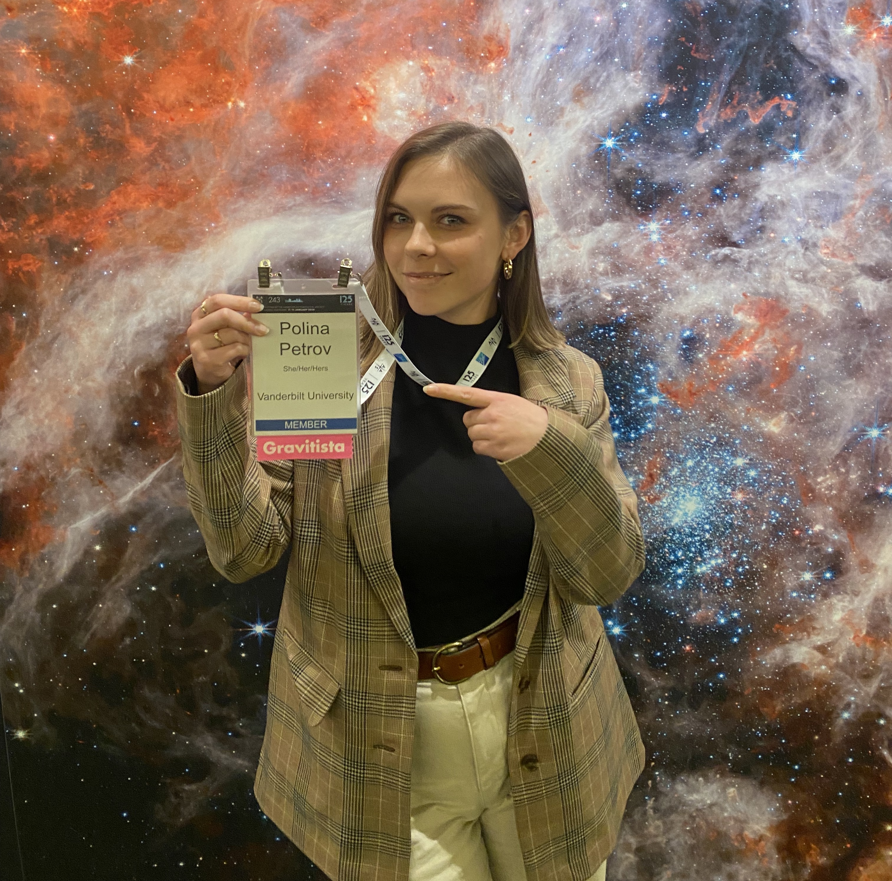

Staying in Pittsburgh for my undergraduate years,
I worked on astrophysics research projects with a number of
different groups and collaborators while earning by BS in Physics
at Carnegie Mellon University. I first worked on stellar multiplicity
at the University of Pittsburgh, but then developed a more specific interest
in multi-messenger astrophysics as I studied binary neutron stars and
neutron star-black hole binaries seen by LIGO via the University of Minnesota’s
REU program. I enjoyed working on gravitational waves (GWs) and
multi-messenger astrophysics (MMA) so much that, simultaneously
at my home institution, I was exploring these topics on a larger scale,
learning about massive black hole binaries and making predictions for
future gravitational wave detections with LISA.
After graduating from Carnegie Mellon in 2021, I moved to
Nashville, Tennessee to start my PhD in Astrophysics at
Vanderbilt University. Since then, I've become a member of NANOGrav
and have been working on my thesis research, which concerns
supermassive black hole binaries, the GWs we can detect from them
using pulsar timing arrays, and MMA opportunities for these systems.
If you're interested in learning more about the work I do and
my publications, check out my research page for more details.
I’ve always enjoyed exploring different artistic endeavors,
which have ranged from dancing to drawing & painting to video editing.
Dance has particularly been my constant through life, my favorite
artistic outlet and stress reliever rolled into one hobby. I’ve been dancing
for 15+ years and have experience in multiple genres, including ballet, jazz,
contemporary, hip hop, tap, musical theater, and heels. You can find some
dances I’ve performed in during my undergrad career
here.
Creating original
choreography is something I’ve played with a lot more in recent years; a few
pieces I’ve choreographed live
here.
I also love to travel, and thanks to my brother who edits commercials and documentaries professionally, sometimes I'm inspired to edit together little music videos encapsulating my trips. You can find some videos I've made here.